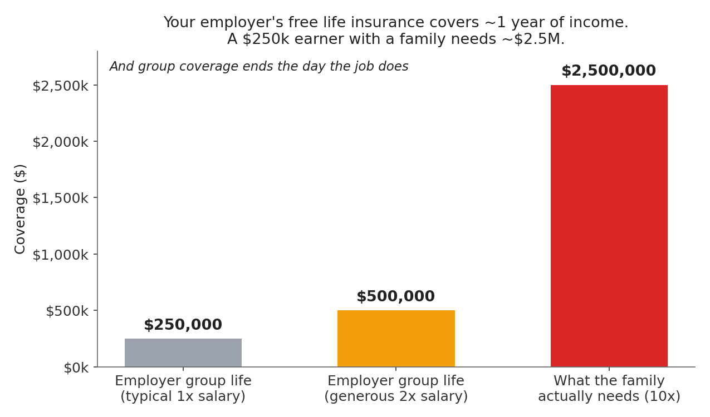
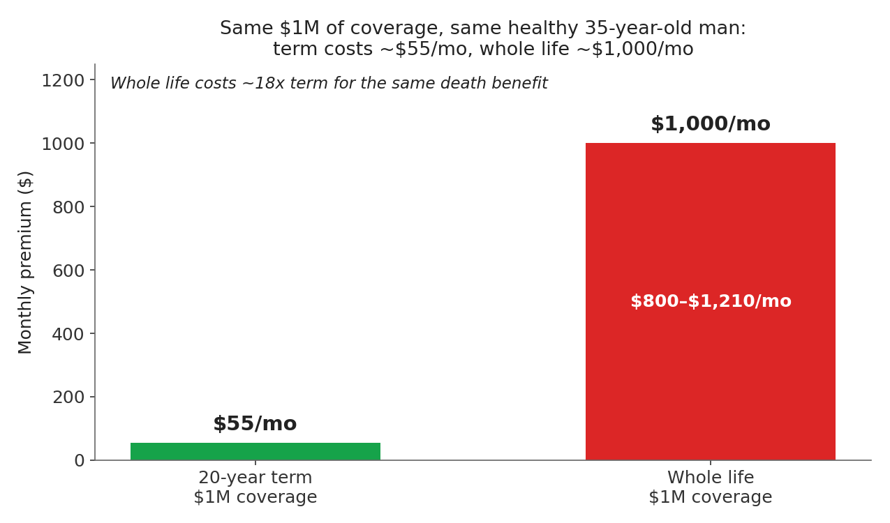
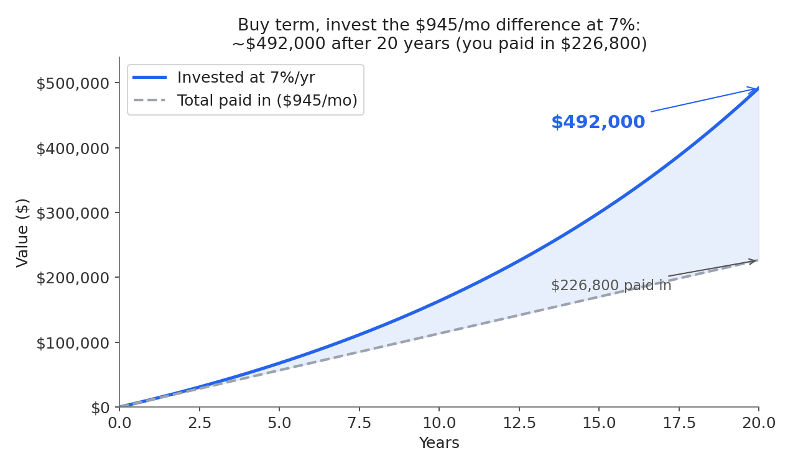

Your employer hands you life insurance worth about one year of your salary — and a life-insurance agent will happily sell you a policy that costs $1,000 a month for the same $1 million of coverage you could buy for $55. On an H-1B, that gap matters more than it does for a citizen: your coverage is tied to a job that is also your visa, your family may be an ocean away, and the US estate-tax rules treat you very differently from the colleague in the next cubicle. This post is the whole picture: how much coverage you actually need, what term and whole life really cost, and the visa-specific traps that decide which one to buy.
All figures are current as of November 2026: 2026 published rate data (MoneyGeek's 2026 study of 30 insurers; carrier sample rates from Wealth Nation, October 2026), and the Internal Revenue Code as in force for 2026.
First: yes, you can buy it
No US law requires citizenship to buy life insurance. Major carriers underwrite H-1B holders every day, and the price is the same as for a US citizen of the same age and health — citizenship does not set your premium; age, health, tobacco use, and coverage amount do. What the visa changes is the paperwork:
- You need a valid, unexpired visa, an SSN or ITIN, a US mailing address, and a US bank account. The application and medical exam happen in the US.
- Most carriers want 6–12 months of US residency first. The best products and the best health classes open up after 2–3 years in the US; in your first year, options are narrower and a broker who works with immigrant clients is worth more than a direct-to-consumer quote site.
- Some carriers check your visa's remaining validity — often 6+ months left when you apply — and some line up your term length against your visa timeline. A denial from one carrier is not a verdict: underwriting rules for foreign nationals differ widely by carrier, so shop three.
- Your spouse on H-4 can usually apply too, under the same rules. Do not leave the non-working spouse uninsured — replacing full-time childcare and household work costs real money, and $250,000–$500,000 of term on a stay-at-home parent is cheap.
How much coverage you actually need
The rule of thumb is 10–15x your gross income. It is a rule of thumb, not a law — but it is a good one, because it approximates the income your family loses plus the debts they inherit. The more precise method is DIME: Debt + Income replacement (10x) + Mortgage + Education.
The worked example: you earn $250,000, owe $600,000 on a mortgage, and have two young kids.
- Income replacement at 10x: $2,500,000
- Mortgage payoff: $600,000
- College for two kids: ~$200,000
- Total need: ~$3.3 million. The 10x rule alone says $2.5 million — the DIME math says more.
That number sounds absurd until you price it. A healthy 35-year-old man pays roughly $100–$200 a month for $2.5 million of 20-year term — about the cost of one family dinner out. The reason the number feels impossible and the price feels trivial is the same reason term insurance works: the insurer is betting you will outlive the term, and at 35, that is a very good bet.

The employer's policy is not a plan
Most tech employers give you 1–2x your base salary in free group term life — $250,000–$500,000 on a $250,000 salary. Three problems:
- It is a tenth of what you need. One year of income does not replace ten years of income, pay off a mortgage, and fund college.
- It ends the day the job does. Group coverage is not portable in any meaningful sense — you can sometimes convert it to an individual policy, but at far worse rates than buying your own term while healthy. On an H-1B, the job is the visa: lose the job and you lose the coverage in the same week you get a 60-day clock to find a new sponsor or leave.
- You do not control it. Your employer can change carriers, cut the multiple, or drop the benefit. A policy you own follows you through layoffs, job changes, and moves abroad — as long as premiums are paid.
Take the free group coverage — it costs nothing. But treat it as a bonus, not the plan.
Term vs whole life: the $945-a-month question
Term life covers a fixed period (10, 20, or 30 years) at a level premium, and pays only if you die during the term. Whole life covers you until you die, the premium never rises, and part of every payment builds cash value you can borrow against or surrender. That permanence and cash value are what you are paying for — and the price is extreme.
For a healthy 35-year-old man, $1 million of coverage in 2026:

| 20-year term | Whole life | |
|---|---|---|
| Monthly premium, $1M at 35 | ~$55 (preferred $42–$55; average ~$85) | ~$1,000 ($800–$1,210) |
| Total paid over 20 years | ~$13,200 | ~$240,000 |
| Coverage after 20 years | $0 — term expired | Lifetime, plus cash value |
| Cash value | None | Yes — grows tax-deferred |
Whole life costs roughly 18x term for the same death benefit. The agent's pitch is that the extra $945 a month is not a cost, it is an investment — the cash value. Run that claim through arithmetic. Buy the term policy, invest the $945-a-month difference at a 7% average annual return, and after 20 years you hold:

~$492,000 — on $226,800 paid in. For the whole-life cash value to beat that, it would have to exceed $492,000 after 20 years of $1,000-a-month premiums ($240,000 paid in). In practice, whole-life cash value grows slowly for years — in the early years most of your premium goes to commissions and the cost of insurance, not to your cash value — and it typically takes a decade or more before the cash value even catches up to the premiums you paid. The "investment" inside a whole-life policy is a low-return savings account wearing an insurance costume, and you are paying $945 a month for the costume.
Two more facts that tilt the same way:
- Term gets more expensive fast if you wait. Premiums rise roughly 5% per year of age through your 30s and about double every decade. Buying the same $1M 20-year term at 45 instead of 35 roughly doubles the monthly premium — from ~$55 to ~$100+. The cheapest policy you will ever be offered is the one you buy at your current age and health.
- You can ladder term. Instead of one $2.5M 30-year policy, buy $1M for 10 years (while the kids are youngest and the mortgage biggest), $1M for 20 years, and $500,000 for 30 years. Coverage steps down as the mortgage shrinks and the kids grow up — and the blended premium is lower than a single long policy. Most term policies also include a conversion option: convert some or all of it to permanent coverage later without new medical underwriting, if your situation changes.
When whole life actually makes sense
Almost never for an H-1B household still building wealth — but there are real exceptions:
- You have a lifelong dependent (for example, a child with a disability who will always need support) and need a guaranteed payout whenever you die, not just in the next 20 years.
- You are worth enough that estate tax is the problem, not income replacement. If your estate is large enough to owe US estate tax, a permanent policy held in the right structure can fund the tax bill. This is a high-net-worth planning tool, not a first policy.
- You have already maxed every better account — 401(k), HSA, Roth/backdoor Roth, 529 — and you specifically want a tax-deferred, creditor-protected bucket with a death benefit attached. Note the order: whole life is the last bucket, not the first.
If none of those is you, buy term and invest the difference. The $492,000 in the chart above is the cost of getting this backwards.
The H-1B-specific tax angle: the $60,000 trap
This is the part of the post that only matters because of the visa — and it is the strongest argument for owning term life in the first place.
The US estate tax treats citizens and nonresident aliens as if they live on different planets. A US citizen or US domiciliary can pass $15,000,000 in 2026 before any federal estate tax applies. A nonresident alien — someone who is neither a citizen nor US-domiciled — gets an exemption equivalent of only $60,000 on US-situs assets (delivered as a fixed $13,000 unified credit under IRC §2102(b)(1), unchanged since 1988), with rates climbing to 40% above it. US-situs assets include US real estate and shares of US corporations — so the house you just bought and the RSUs in your brokerage account are both inside the tax. A $600,000 house owned outright by a non-domiciled nonresident produces an estate-tax bill in the hundreds of thousands.
Here is the carve-out that makes life insurance the cleanest tool in this situation: the proceeds of life insurance on a nonresident's own life are not US-situs property at all (IRC §2105(a)) — even if the insurer is a US company and the policy is dollar-denominated. The death benefit passes to your family free of US estate tax, and it is also free of federal income tax (IRC §101(a)). So a term policy sized to the estate-tax bill hands your heirs the cash to pay the tax without selling the house.
Two caveats, both important:
- Domicile is the test, not visa status. Estate-tax residence turns on domicile — where you live with the intent to remain indefinitely — not on how many days you spend here or which visa you hold. Many H-1B holders who have lived in the US for years, bought a home, and put down roots may already be treated as US-domiciled, in which case the $15,000,000 exclusion applies and the $60,000 trap does not. Do not assume either way: this is a question for a CPA or estate attorney, not a blog post.
- The exclusion covers insurance on your own life. A policy you own on someone else's life is a different asset and does not get the same treatment.
If you leave the US
A term policy you own stays in force if you move abroad, as long as premiums keep being paid — typically from a US bank account, which you should keep open. Before you move, get it in writing from the carrier that coverage continues outside the US; most major carriers confirm it, but "most" is not "yours." Two things to settle before departure:
- Beneficiaries abroad can still be paid, but the insurer will need death certificates and identity documents it can verify — name a US-based contingent beneficiary or trustee as a backup if your primary beneficiary lives overseas.
- Surrendering a whole-life policy after leaving triggers US tax on the gain (cash value minus premiums paid). If you hold whole life and depart, get tax advice before surrendering — the gain does not vanish at the border.
What not to do
- Don't rely on employer group life alone. It is 1–2x salary, it ends with the job, and on an H-1B the job is the visa.
- Don't buy whole life as your "investment" before maxing the 401(k), HSA, and Roth. The accounts with real tax advantages and real market returns come first; whole life is the last bucket, if it earns a place at all.
- Don't name minor children directly as beneficiaries. A minor cannot receive a death benefit directly — a court appoints a guardian to manage it. Name your spouse primary, and use a trust or a designated guardian/custodian arrangement for the children's share. Review the designation after every major life event.
- Don't let a policy lapse during a job change or a move. The gap between employers is exactly when you are most exposed — new health issues discovered later can make re-buying far more expensive, or impossible.
- Don't buy a 10-year term when you need 20. Match the term to the horizon: until the youngest child is an adult and the mortgage is gone. A 20- or 30-year term at 35 is the standard answer for a young family.
- Don't skip the medical exam to save a week. No-exam policies cost more for the same coverage and cap out at lower amounts. If you are healthy, the fully underwritten policy is the cheaper one.
- Don't assume the estate-tax trap does or doesn't apply to you. Domicile is a facts-and-circumstances test. If you own US real estate or hold significant US stock, get the determination made — a $55-a-month term policy is a cheap hedge either way.
Takeaways
- H-1B holders can buy US life insurance at citizen prices — same premiums for the same age and health. You need a valid visa, SSN or ITIN, US address, and US bank account; most carriers want 6–12 months of US residency first.
- You need roughly 10–15x your income in coverage. A $250,000 earner with a family needs ~$2.5 million — and a healthy 35-year-old buys that as 20-year term for roughly $100–$200 a month.
- Your employer's free group life is 1–2x salary and ends with the job. It is a bonus, not a plan.
- Whole life costs ~18x term for the same $1 million: ~$1,000 a month vs ~$55. Investing the $945-a-month difference at 7% builds ~$492,000 in 20 years — the whole-life cash value will not beat that.
- Term gets roughly twice as expensive every decade you wait. Buy at your current age and health; ladder terms to match the mortgage and the kids' ages.
- If you are a nonresident alien for estate-tax purposes, your US house and US stocks face tax above a $60,000 exemption at up to 40% — but life insurance proceeds on your own life are excluded entirely (IRC §2105(a)), making term life the cheapest way to fund that bill.
- A policy you own stays in force if you leave the US, as long as premiums are paid. Confirm it with the carrier in writing before you move.
This post is for education only — not tax, legal, or investment advice. Immigration questions need an immigration attorney.
Sources: MoneyGeek, "Average Life Insurance Cost in 2026" (study of 30 insurers, reviewed October 10, 2026); Wealth Nation, "Whole Life Insurance Rates by Age: 2026 Sample Chart" (October 2026); MLifeInsurance, "Life Insurance for Non-US Citizens (2026)"; LifeQuotesWeb, "H-1B Visa Holders Life Insurance Guide 2026"; IRC §101(a) (death benefit exclusion), §2102(b)(1) ($13,000 unified credit / $60,000 exemption equivalent), §2105(a) (life insurance proceeds not US-situs), §2001(c) (rates to 40%); Revenue Procedure 2025-32 ($15,000,000 basic exclusion for citizens/domiciliaries in 2026).